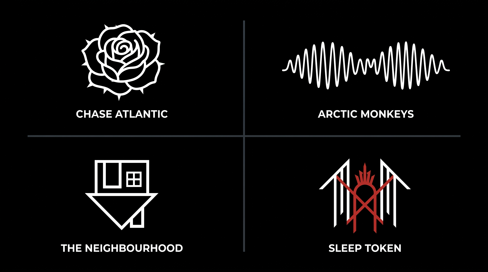
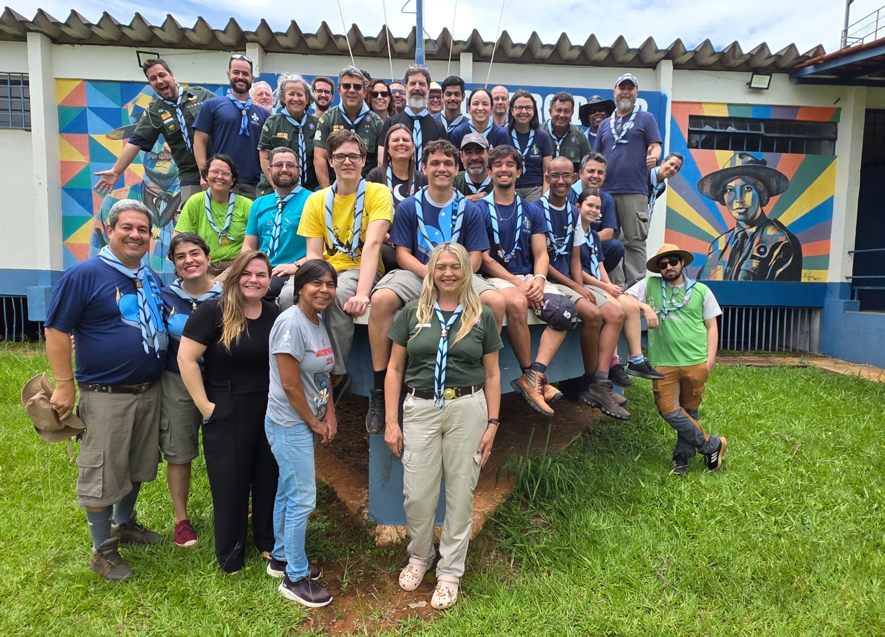
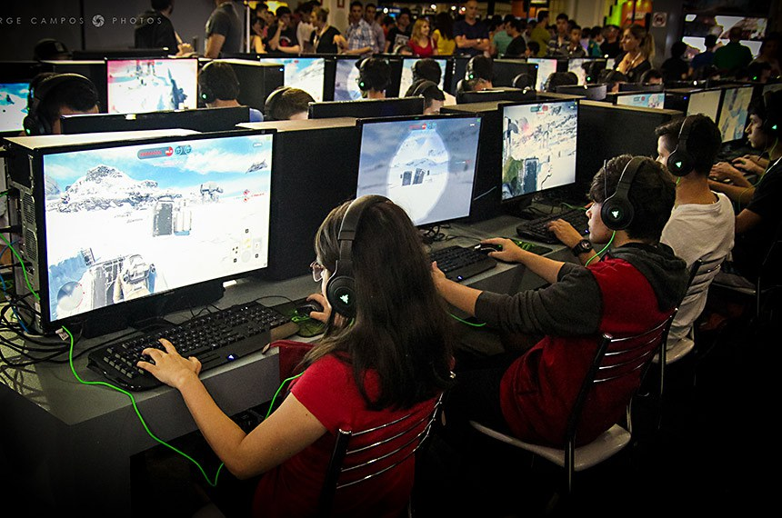
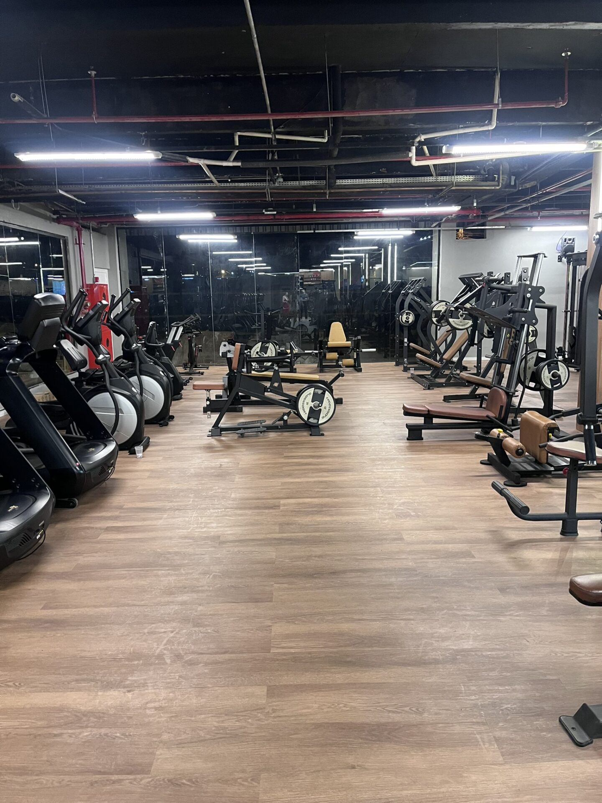

Sobre mim
Me chamo Eduardo tenho 19 anos, moro em Brasilia a 5 anos, vim de Belo Horizonte pra Brasilia.
Neste momento, estou estudando HTML, CSS e JavaScript. Meu objetivo é desenvolver minhas habilidades, praticar o que aprendo nas aulas e criar meus primeiros projetos.
Aprendo bastante rapido, resolvo problemas de formas variadas, e sou bastante criativo.
O que estou aprendendo
- HTML: estrutura e conteúdo das páginas.
- CSS: cores, fontes e organização visual.
- JavaScript: interatividade básica.
Meus hobbies
Além de estudar programação, também gosto de aproveitar o tempo livre. Nesta galeria posso compartilhar fotos de algumas atividades que fazem parte da minha vida.

Musicas
Gosto de varios estilos de musicas. A musica faz parte do meu cotidiano sempre fico escutando. pode parecer que nao mas ela acaba me fazendo se consentra mais nas coisas que requer foco e atençao

Escoteiro
Um grupo escoteiro onde eu me divirto bastante, onde eu aprendo a fazer pionerias e amarras, e tambem acontece atividades como acampamento e atividades escoteiras. Alem disso fazemos atividades voluntarias como ajudar uma creche com mantimentos, fazer abrigos pra animais entre varias atividades

Jogos
Meus passa tempo preferido gosto de jogar jogos eletronicos como fisicos como volei e basquete. as vezez conheço pessoas que gostam da mesmas coisas que eu o que tornar isso bastante divertido

Academia
Sempre que possivel vou pra academia, onde posso tirar todo o estresse acumulado que juntei ao longo do dia
Entre em contato
Preencha o formulário abaixo.